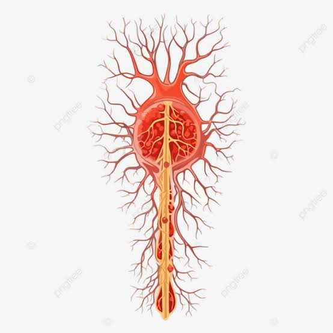

Os nervos fazem parte do sistema nervoso periférico e funcionam como uma espécie de caminho de comunicação entre o cérebro, a medula espinal e o restante do corpo. Eles são formados por conjuntos de fibras nervosas, chamadas axônios, que transmitem sinais elétricos e químicos. Os nervos podem levar informações do corpo para o sistema nervoso central, como sensações de dor, temperatura e toque. Também podem levar comandos do cérebro e da medula para os músculos, permitindo a realização dos movimentos.
Voltar